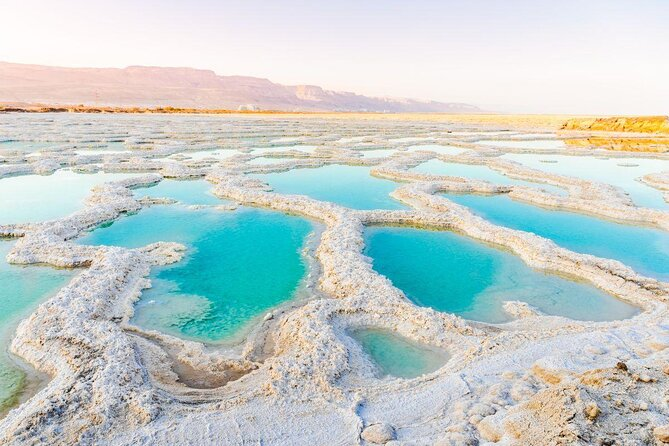
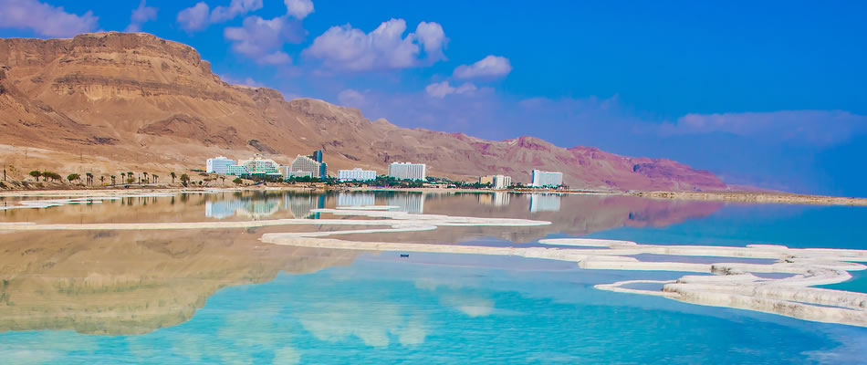
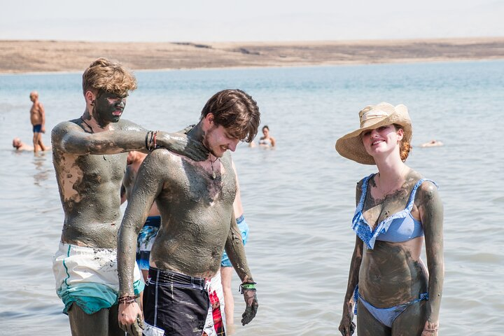

The Dead Sea is a salt lake bordered by Jordan and Israel. It's famous for being the Earth's lowest point on land and for its extremely salty water, which allows people to effortlessly float on its surface. The high mineral content of its waters and mud is believed to have therapeutic properties, attracting tourists seeking relaxation and relief from skin conditions. However, the Dead Sea is also shrinking due to various environmental factors, raising concerns about its future.


